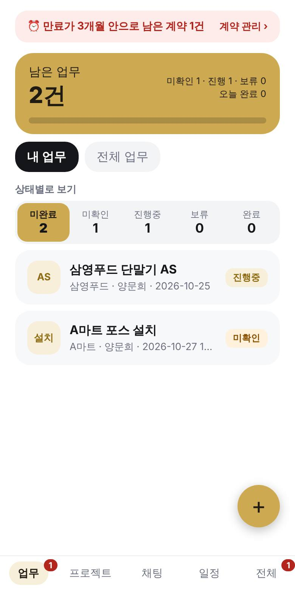
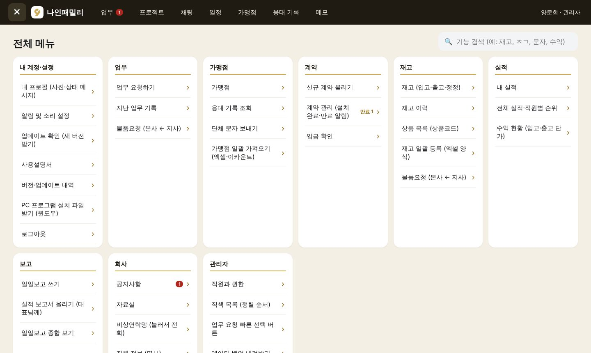
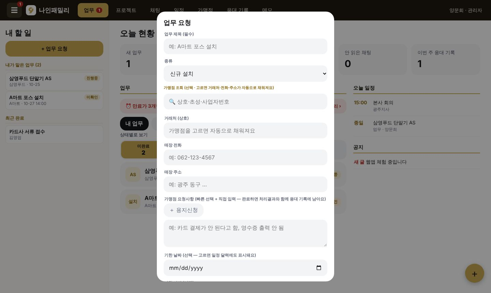
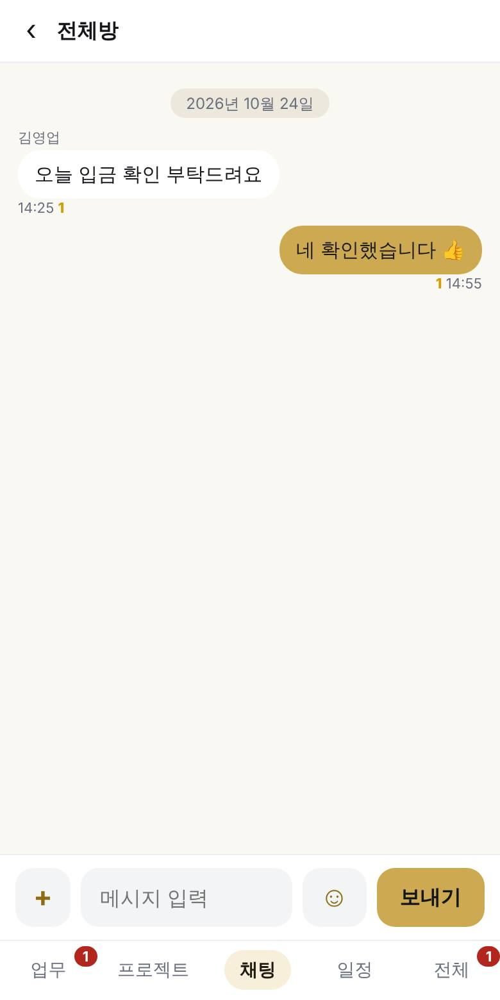
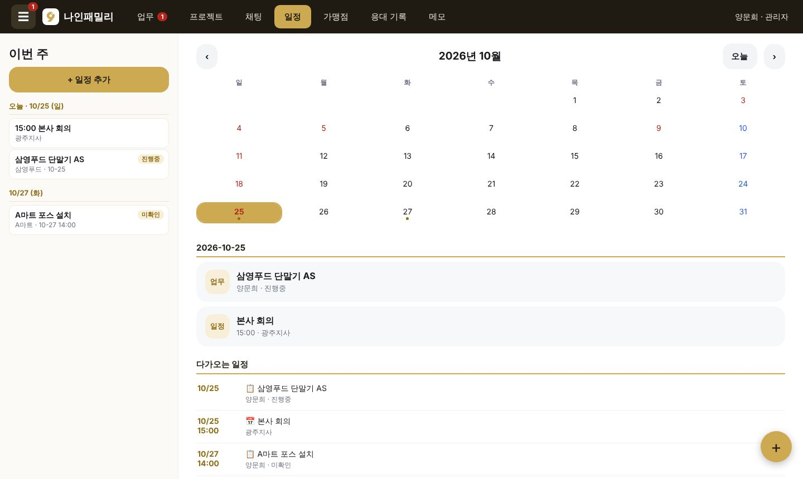
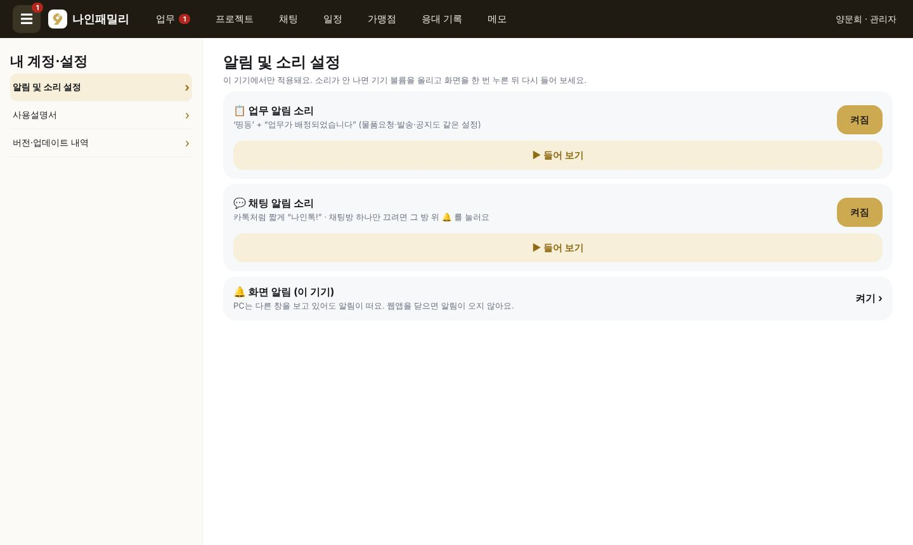
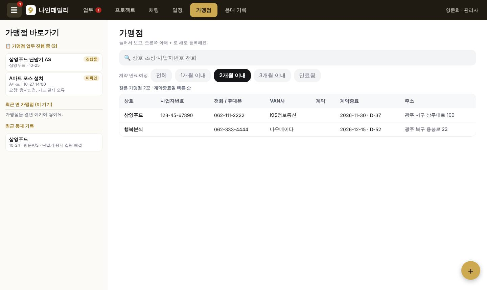
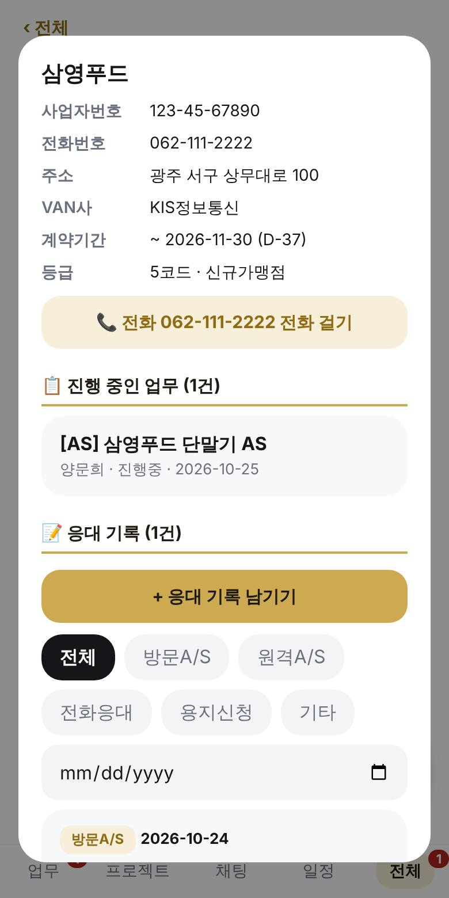
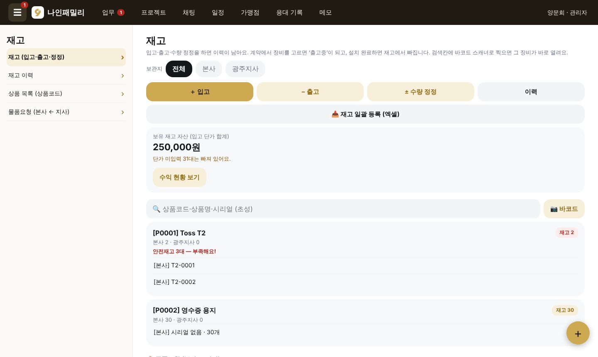
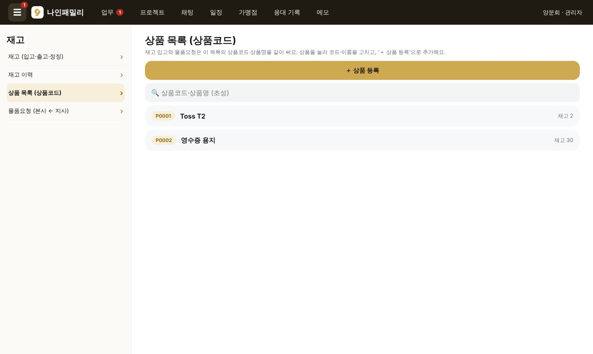
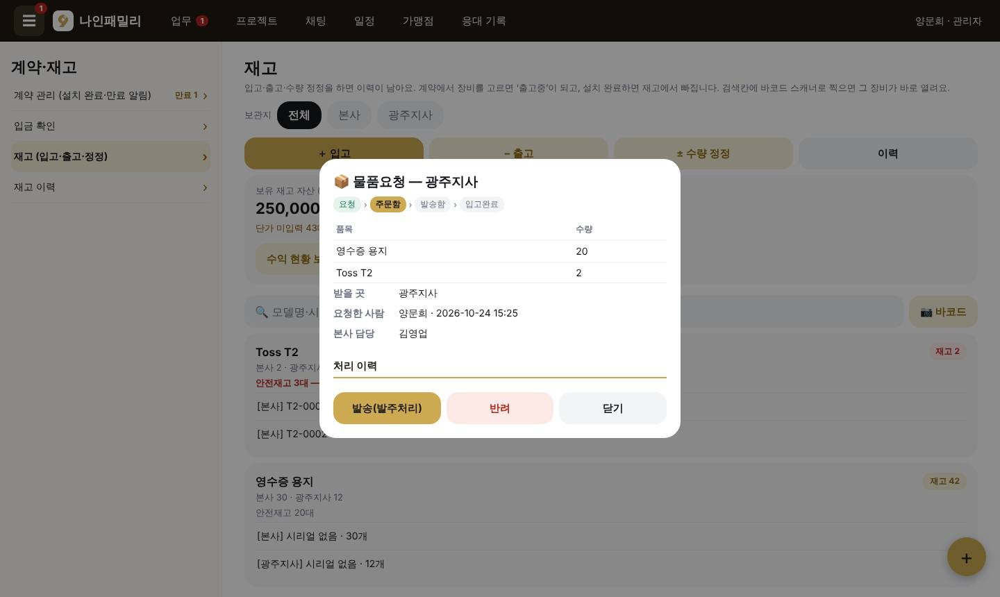
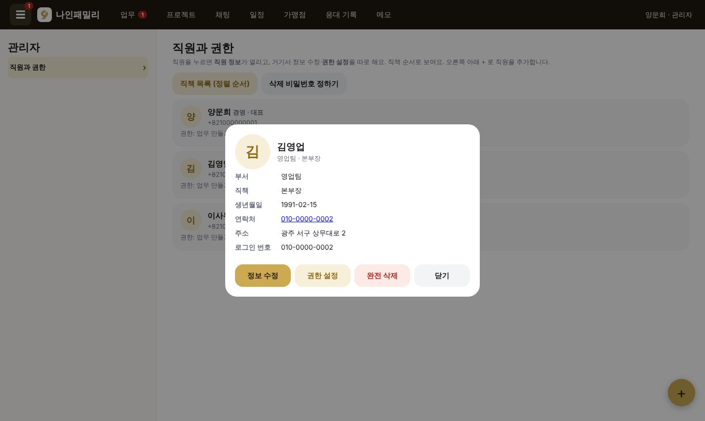
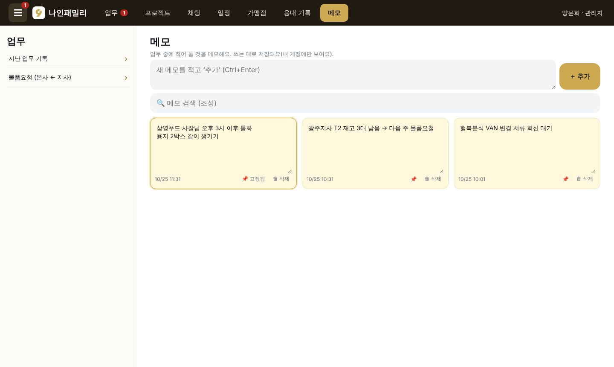
관리자가 ☰ → 관리자 → 직원과 권한 → 직원 → 권한 설정에서 켜고 끕니다. 실적·보고·1:1 대화·단가는 서버에서도 막혀 있어 권한이 없는 기기로는 자료가 내려가지 않습니다.
| 권한·설정 | 켜면 |
|---|---|
| 업무 만들기 | 업무 올리기(나에게) |
| 다른 직원에게 업무 배정 | 다른 직원을 담당자로 지정 |
| 전체 업무 보기 | 모든 직원의 업무 (없으면 내 것만) |
| 전체 이력 보기 | 모든 직원의 지난 업무 기록 |
| 공지 작성 | 공지 올리기·고정·읽은 사람 보기 |
| 실적 보기 (본부장·대표님) | 전체 실적·순위·수익·단가·모든 계약, 실적 보고서 작성 |
| 일일보고·실적보고 종합 보기 (대표님) | 직원 전체 일일보고와 실적 보고서 열람 |
| 가맹점 등록·수정 (암호 필요) | 가맹점 등록·수정·일괄 가져오기 |
| 직원 정보 보기 | 직원 명부(부서·직책·생년월일·연락처·주소) |
| 직원 관리 (관리자 전용) | 직원·권한·직책·삭제 비밀번호·백업·보호·복원·상품 목록·재고 일괄 등록 |
| 영업 실적·순위에서 빼기 | 체크하면 실적 합계·순위에서 빠짐 (대표님 등) |
| 일일보고·실적보고 명단에 넣기 | 끄면 일일보고 종합 명단·직책순 실적에서 빠짐 |
서버 규칙이 실제 삭제를 막고 ‘삭제 표시’만 남깁니다. 지운 가맹점은 보호·복원에서 되살립니다.
업무·가맹점·재고 같은 주요 자료는 저장할 때마다 누가 언제 무엇을 바꿨는지 기록됩니다(채팅·프로필 제외). 가맹점은 예전 내용으로 되돌립니다.
관리자 기기에 하루 한 번 14일치 자동 보관, 백업 파일 내려받기. 서버 전체 암호화 백업은 백업 비밀값을 등록하면 매일 돕니다.
직원 완전 삭제와 가맹점·재고·응대 기록·자료실 삭제 때 관리자가 정한 비밀번호를 한 번 더 묻습니다.
나머지 기능은 모두 같습니다.
| 기능 | 안드로이드 앱 | 웹앱 (아이폰·PC) |
|---|---|---|
| 화면 꺼져도 알림 | ○ (상시 알림) | 열어 둔 동안만 |
| 채팅방 이름 변경·검색·배경·비우기 | ○ | 음소거만 |
| 프로젝트 항목 삭제·진행 기록 | ○ | - |
| 시리얼 사진 인식 | ○ | 바코드 스캔 |
| PC 메모 · 왼쪽 칸 | - | ○ (PC) |
| 저장 상태 띠 · 가맹점 동시 수정 경고 | - | ○ |
| 가맹점 삭제 | 최고관리자 | 가맹점 권한 + 암호 |
| 단체 문자 | ○ (폰 문자 앱) | 아이폰 ○ · PC × |
APK를 받아 설치. 처음 한 번 ‘이 출처 허용’.
사파리에서 열고 공유 → 홈 화면에 추가.
설치 파일 실행 → 바탕화면에 나인패밀리.
PC에서도 바로 발송
한진택배 접수·송장 출력·운송장 기록, 로지아이 PC 창
목록을 엑셀로, 화면을 인쇄용으로
링크로 보내고 고객이 폰에서 서명
웹앱을 닫아도 알림, 고객 공지